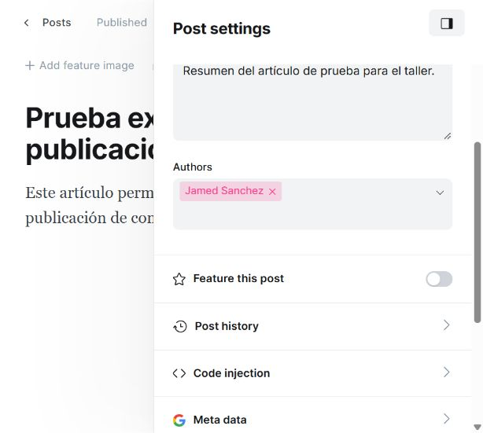

REGISTRO DE PRUEBA EXPLORATORIA · GHOST 5.130.2
D05 · Casilla Feature this post sin nombre accesible
Reproducción: Artículo → Settings → desplazarse hasta Feature this post → inspeccionar la casilla.
Captura original de la aplicación

La imagen original no fue retocada.
Datos observados del control
Control 1
{
"tipo": "checkbox",
"texto": "",
"title": "",
"ariaLabel": null,
"ariaLabelledby": null,
"etiquetasAsociadas": []
}Fragmento literal del DOM observado:
<input class="gh-input post-settings-featured gh-input-x" data-test-checkbox="featured" type="checkbox">
Observado: La casilla no tiene id, label asociado, title ni atributos ARIA de nombre. El estado sí está disponible.
Esperado: La casilla debe identificarse como Destacar este artículo.